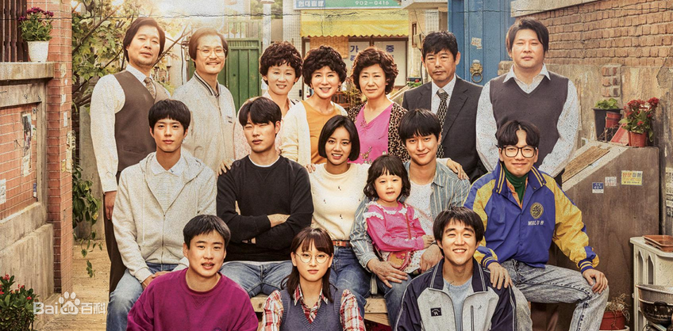
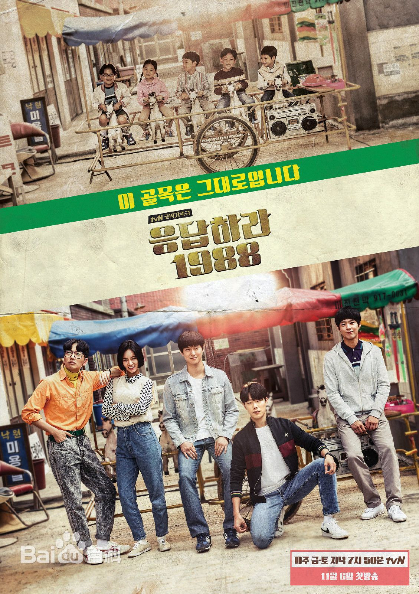

《请回答1988》-韩剧-推荐指数：五星
推荐理由：“亲情”、“友情”、“青涩的爱情”、“邻里情”，好像年轻的我们逐渐走向成熟的一个缩影，源于生活，细致入微。
内容介绍
回忆了1988年双门洞胡同里相邻五个家庭内部以及相互之间的感人故事。因为重情义和人好，写下的债务担保书出了问题而生活在地下层的成德善(李惠利饰)、成宝拉(刘慧英)、成余晖(崔胜元)及父亲成东镒、母亲李一花一家；过尽贫苦日子一夜中彩票暴富的金正焕(柳俊烈)、金正峰(安宰弘)及父亲金成均、母亲罗美兰一家；成善宇(高庚杓)、小珍珠及单亲母亲金善映一家；天才围棋少年崔泽及单亲父亲崔成武一家；父亲是教导主任、母亲是公务员的东龙一家。
最后的独白说明了整个剧集的主题：“怀念那个时期，怀念那个胡同，并不只是因为怀念年轻时候的自己，而是因为那里有爸爸的青春，妈妈的青春，朋友们的青春，和我所有爱着的青春，也因为没能对那些再也无法聚到一起年轻的风景，最后问候一声，而感到惋惜。如今对已经逝去的东西，对再也无法回去的时间，说一句迟到的问候，再见我的青春“，从亲情、友情、爱情、邻里情接着往下讲。
一、亲情：这部剧里让我泪奔最多的不是里面的友情和爱情，而是无处不在的亲情。爸妈在你犯错的时候，会骂你，但当你真正受委屈或者出事的时候却是竭力维护你，会心疼你、会理解你、会不舍得骂你。父母对子女的爱是永远不变的，而孩子总有一天会长大，能体会父母的不易和爱。
a.亲情是妈妈为了保护自己的孩子可以不要自尊心和脸面
成宝拉参加示威游行要被警察局的人抓走，妈妈李一花淋着雨跑出来和警察纠缠，撕心裂肺地说着宝拉是一个多么优秀的孩子试图为她脱罪，而宝拉低头看见妈妈脚趾流着血。这时宝拉明白母亲最想守护的人就是自己，抛开自尊心的妈妈很强大。
b.亲情是妈妈偷偷留下的信封和帮我度过难关的钱
善英装出过着好生活的样子，却终究被妈妈发现了自己穿破了不舍得扔的旧衣服，走的时候偷偷留下了钱和信：这些钱请拿去为自己和孩子买点新衣服吧。接到电话只是叫了一声妈妈，接着再也说不出口开始哭，真是特别感动。
c.亲情是爸爸说不出口但会默默为你守护的爱
宝拉结婚，父女不善言辞对视互相都说不出口，把感情都写在了信里。有个细节，爸爸的鞋、衣服不合适，到后来长大后宝拉说鞋子由她来买，宝拉也长大了。还有宝拉去考试院，爸爸半路上给她买了好多药，最后塞给宝拉一卷零花钱，让她不要太省，偶尔也买点肉吃。大概爸爸的爱的方式都是这么特别的吧，不愿意说出来，心里却一直默默守护着。就像我们自己的爸爸一样。
d.亲情是爸爸是家里的超人
崔泽的爸爸徒手掰开了铁锁，手受伤也浑然不觉，接到电话的副部长也对小泽说，你爸爸像疯了一样，从没听见一个人这么大声地喊着。听到这些，小泽才知道刚才如此镇静的爸爸原来那么担心他。还有东龙生病起大早为儿子买香蕉的东龙爸爸。生活中的父亲，就是这样的存在。
e.亲情是儿女对爸妈的理解
正焕给更年期的妈妈办婚礼，德善给退休的爸爸写感谢信。父母也是人，也会有喜怒哀乐，也许只是藏的比较深。儿女有时也能通过自己的方式来安慰父母。
二.爱情：初恋、暗恋和爱恋
1.正焕：搞怪的不是红绿灯，不是时机，而是我数不清的犹豫。
时间会流逝，所以时间带来离别，因此，时间给人们留下遗憾。若爱一个人现在就说吧！在忙碌的这个瞬间，在变成遗憾之前说出口。或许时间给我们最大礼物是爱过的记忆，所以在更晚之前，战胜羞涩，表白心声。向心爱的他。
2.阿泽：爱情没有所谓时机，只有更恳切的心
3.善宇和宝拉：爱就是相隔六年，我依然在等你
4.正峰和美玉：偶然的相遇和重逢
爱你的心不变正峰哥真是情圣，“曼玉 你知道吗 维也纳虽然是奥地利的首都 但你却是我心脏的首都”，厉害了。
四.邻里情:从一盘菜到满桌的菜
三.友情：一起长大，一起度过美好的青春
胜负欲很强的小泽，有一次比赛输了，大人们都小心翼翼地不去提起，而伙伴们在他们故意挖苦小泽的时候，教他骂人宣泄负面情绪的时候。这就是朋友啊，别人都怕触碰你的伤口小心翼翼却无法让你从坏情绪中走出来，而朋友们几句玩笑话就能击溃心中的不快，让自己重获笑颜。
善宇被学校混混欺负索要善宇爸爸留下的遗物时，正焕毫不犹豫地一拳过去打倒了那个欺负善宇的混混。
小泽来到空军部队看正焕，正焕最终放弃了，和自己一直暗恋的初恋说了再见，他选择退出。
精彩点
- 年代感。这部剧回忆了1988年的故事，没有网络，也没有智能手机的年代。那时候90后还没出生，但是我们也曾经历过这些物品，包括黑白/彩色电视机、留声机、韩国奥运会、BB机。一点一滴的生活小事，没有很夸张的波澜起伏，逐渐唤起我们一缕缕的回忆、一丝丝的感动，回想起自己小时候也常常在玩伴家玩闹，被爸妈隔老远叫回家的场景。
- 主题贴近生活，而小时候的我们和现在的我们不自觉形成了一种对比。长大后的我们也许更加孤独，公寓生活让我们搞不清楚隔壁住的是男是女，儿时四邻八方的热闹才是生活原本的样子，但是孤独是成长的必经的过程，人无法逃避。
3.感动在每一集当中，看了之后给爸爸、妈妈打一个电话吧。
旁白
独白整理链接:http://www.jianshu.com/p/4c951c7ef13d。
1.你对我的一个误区
大人只是忍，只是在忙着大人们的事，只是在用故作坚强来承担年龄的重担。大人们也会疼。
不过偶尔让人有错觉也行，只要能让妈妈觉得自己是幸福的料理王。再难吃的便当，吞下去就是了。陷在幸福的错觉中，没必要急忙说出真相，偶尔错觉反而让人更幸福。
懂事的孩子，只是不撒娇罢了！只是适应了环境做懂事的孩子，适应了别人错把他当成大人的眼神，懂事的孩子，也只是孩子而已。错觉是短暂的，但误会是长久的。所以，错觉是个人自由，但误会是不可有的。
2.有钱无罪，没钱有罪。
别人的看得再好，都是一场空啊！
3.人生啊，真是个迷！
没有再比我的房间，更讨厌更简陋的地方了。但是讨厌和简陋的另一种说法，可能是熟悉和舒适，一起度过漫长的岁月再熟悉不过的我的所有，和让我舒适的我的人，才能真正了解我、拥抱我、安抚我。因为讨厌和简陋，有的时候可能烦的要死，但在世界上守护我的，只有我的人，熟悉和舒适，对的，我的人，所以不能不爱，不能不爱他们，不能不爱。
偶尔觉得妈妈很丢人，妈妈为什么连起码的脸面和自尊心都没有呢，我都觉得上火。比起她自己，她有更想守护的，那就是我，但当时我并不知道。人真正变强大，不是因为守护着自尊心，而是抛开自尊心的时候，所以妈妈很强大。听说神不能不在，所以创造了妈妈。到了妈妈的年龄，妈妈仍然是妈妈的保护神。妈妈这个词，只是叫一叫，也触动心弦。妈妈，依旧力大无比。
好不容易到了能够安慰妈妈的年龄时，已经太懂事了，真不好意思开口说，谢谢妈，我爱你。现在想让妈妈高兴的话，就说我现在需要妈妈。就这一句就足够了！
已到了不相信圣诞老人的年龄，不相信守护天使的游戏，偷偷放下礼物，暗暗地喜欢对方。从中得不到满足，若不表白，因为心里充满对方呼吸都困难；若要表白，因为太羞涩，心脏都要蹦出来了。很想张扬，但又不想被人发现，88年的那个悸动，我们正值18岁。
4.致你
宗教之所以在地球上存在，或许是因为这帮女儿和儿子们，是因为父母们急切地抓住任何一样东西，为儿女们祈福，为世上的父母和他们的儿女，上帝、菩萨、阿拉神，还有圣诞老人，必须存在。
5.温暖的一句话
话语里包藏着真心，所以一句话，也带有体温，所以哪怕是一句话。在这冷酷的世界中，让人维持生存的体温，能够活下去的，不是了不起的名言，也不是有学识的一语中的，而是你一句有体温的温暖的一句话。
所谓爱一个人，即便对方一直折腾你，你想要一直讨厌对方，但怎么也讨厌不起来。所谓爱是，不是不讨厌，而是绝对不能讨厌的意思。
6.超人归来
小的时候，家里住着超人，他是个能够修理世上所有东西的百战天空。何时何地有谁遇到了麻烦，他就会出现，然后解决一切，就像万能侠客一样，他是不会懦弱的超级英雄般的存在。但是当我懂事之后才好不容易明白了，只是没有被发现罢了，超人也是人。
有多少肮脏卑鄙令人作呕悲伤可怕累人的世界，从爸爸的面前闪过了呢，而现在我才好不容易懂得了，不论多么肮脏卑鄙令人做呕悲伤可怕或是累人，他之所以能够坚强地挺过来，是因为有要守护的人，因为有家人在，有我在。不是出于别的理由，是因为他要以父亲的名义生活下去。
7.再见初恋！
缘分是不会经常找来的，如果要用缘分这个词，必须是偶尔，很偶尔地出现的戏剧性的时刻，那才叫缘分，所以缘分的另一个名字是时机。
8.再见我的青春，再见双门洞！
当再次回到凤凰堂胡同之时，就如流逝的岁月般，胡同也上了年岁。但无论是我的青春还是这条胡同，再也无法回到过去了，岁月依旧流逝，一切终将过去。年岁渐长，青春之所以美丽，恐怕这就是原因。在刹那的瞬间，耀眼闪烁之后，再也无法回去。涌出眼泪的青涩岁月，我也有过，这种青春。
双八年，我们双门洞的故事就此结束。怀念那个时期，怀念那个胡同，并不只是因为怀念年轻时候的自己，而是因为那里有爸爸的青春，妈妈的青春，朋友们的青春，和我所有爱着的青春，也因为没能对那些再也无法聚到一起年轻的风景，最后问候一声，而感到惋惜。如今对已经逝去的东西，对再也无法回去的时间，说一句迟到的问候，再见我的青春，再见双门洞。
火热又纯真，所以肝肠寸断地怀念那个时候。听见了吗？听见了就请回答，我的88年，我的青春。
音乐
公交车上抢耳机的一幕，真的超级甜，瞬间就爱上了这首歌：《Last Christmas》- Wham
电视里放的歌，听到瞬间就想站起来跳舞哈哈：《그대에게》- 申海哲， 中文叫《致你》
剧照

